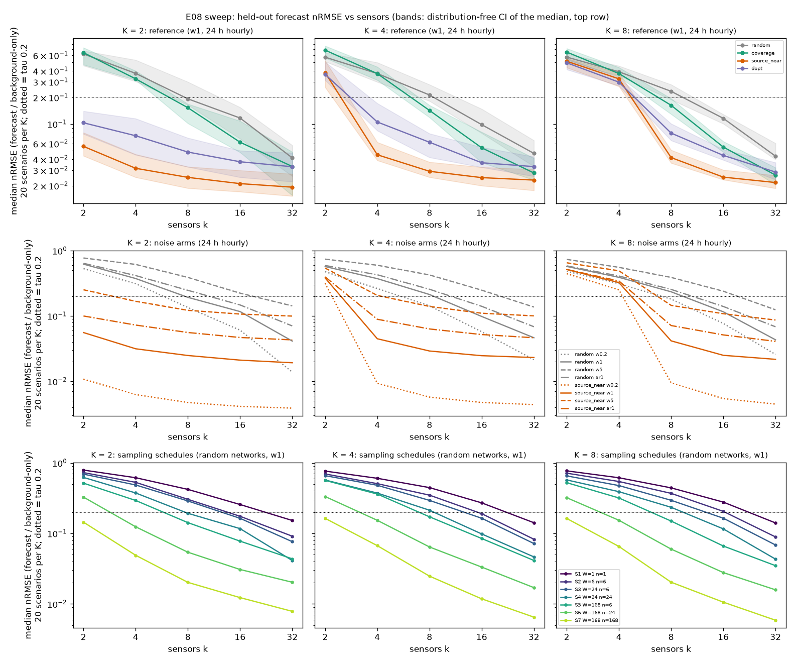
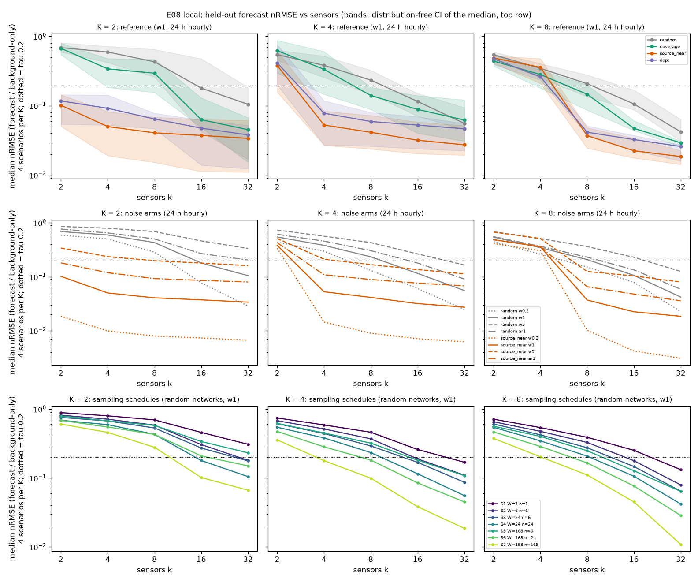

11 E08 Sensor sufficiency
Simulated passive tracer only; nothing here is evidence about ambient PM2.5 or real deployment.
Question (plan 2). How do sensor count k, number of sources K, noise level, sampling cadence and observation span interact? For each setting, what is the smallest network that is “sufficient”?
Evidence label. 64² sweep (cluster job 205039, 20 scenarios per K): the five preregistered tests form one Holm family; everything else is exploratory. The 32² pilot (4 scenarios per K) is indicative only. Not yet independently audited.
Evidence. - Design note: docs/research/sufficiency-design.md, committed alone before any E08 computation. Hypotheses H1–H5 come from E05 and E07; lead decisions are in §13. - Tables tables/e08-sweep-* and tables/e08-local-*; journal state/experiments/e08.md.
11.1 Design
- Scenario: (K, seed) under the protocol’s mixed training wind. K ∈ {2, 4, 8}.
- Factors: k ∈ {2, 4, 8, 16, 32}; white noise at 0.2×, 1× and 5× the protocol σ, plus AR(1); seven sampling schedules that separate span from reading count. These include exact matched-budget pairs: k sensors × 24 readings against 4k sensors × 6.
- Strategies: random, coverage (no source knowledge), near-source and D-optimal.
- Breakpoint k*(τ): the smallest k from which held-out forecast nRMSE (relative to background-only) stays ≤ τ. The headline is τ = 0.2.
- 64² sweep: 20 seeds per K. It reuses 78 of E07’s cached simulations and adds 256 new ones.
- Scope: the K = 8 and k = 32 protocol cells that E07 left unrun are reported as secondary. E07’s approved confirmatory scope is unchanged.
11.2 64² sweep results

| Median k*(0.2) | K = 2 | K = 4 | K = 8 |
|---|---|---|---|
| near-source | 2 | 4 | 8 |
| D-optimal | 2 | 4 | 8 |
| coverage | 8 | 8 | 8 |
| random | 8 | 16 | 16 |
Preregistered tests (Holm family):
| Hypothesis | Unit | Result | Verdict |
|---|---|---|---|
| H1: D-optimal k* larger at K = 8 than at K = 2 | 20 seeds | 19 wins, 0 losses, 1 tie | supported |
| H2: 5× noise hurts random more than near-source (k = 8) | 60 scenarios | 0 / 60 | contradicted |
| H3: D-optimal’s 24 → 168 h span gain is larger in southerly hours (k = 8) | 60 scenarios | 60 / 60 | supported |
| H4: 4k × 6 readings beat k × 24 (random, W = 168 h, k = 2 → 8) | 60 scenarios | 58 / 60 | supported |
| H5: near-source beats D-optimal (k = 8, 40 fresh scenarios) | 40 scenarios | 39 / 40 | supported |
- Location knowledge sets the requirement. Location-aware designs reach τ = 0.2 with about as many sensors as sources. Location-blind designs need 8–16 sensors whatever K is.
- Noise (H2 reversed). Near-source designs lose more in relative terms when noise rises fivefold. Their error starts very low, so they remain far better in absolute terms.
- Span and readings. For random networks, more sensors beat more readings at every budget tested. For location-aware designs this flips at large k: once the sources are covered (k = 8 → 32), extra readings per sensor beat extra sensors (near-source 0/60, D-optimal 5/60 at W = 168 h). Near-source also gains from a longer span, contrary to H3’s secondary prediction.
- Protocol cells left unrun by E07 (secondary). D-optimal cuts error against random by at least 10 % in 8 of 9 cells (K = 2, 4, 8 × k = 8, 16, 32). The exception, K = 4 with k = 32, straddles the threshold. These cells were not added to E07’s confirmatory set.
11.2.1 Follow-up: all past data, and no sites near the sources (64², exploratory)
These reruns were declared in advance and reuse the stored 64² simulations (cluster job 205394).
| Median k*(0.2), K = 2 / 4 / 8 | 24 h window (reference) | sites within 1200 m excluded | all past data |
|---|---|---|---|
| near-source | 2 / 4 / 8 | 4 / 8 / 8 | 2 / 2 / 2 |
| D-optimal | 2 / 4 / 8 | 4 / 8 / 16 | 2 / 2 / 2 |
| coverage | 8 / 8 / 8 | 12 / 8 / >32 | 2 / 2 / 2 |
| random | 8 / 16 / 16 | 16 / 24 / >32 | 2 / 2 / 2 |
- With all past data, sufficiency at τ = 0.2 becomes trivial. Every strategy gets there with 2 sensors for every K. This is a floor effect: k* stops discriminating between strategies.
- H5 reverses with memory. At k = 8 on the 40 fresh scenarios, D-optimal beats near-source in 36 of 40 cases (the 24 h window gave 39 of 40 the other way). This replicates gate-09’s E07 finding on new scenarios.
- Without in-footprint sites, about twice as many sensors are needed. Near-source still beats D-optimal (34 of 40 at k = 8), by a smaller margin.
11.3 Pilot results (32², exploratory)

| Median k*(0.2) | K = 2 | K = 4 | K = 8 |
|---|---|---|---|
| near-source | 2 | 3 | 8 |
| D-optimal | 2 | 4 | 8 |
| coverage | 12 | 8 | 8 |
| random | 24 | 12 | 16 |
- Location knowledge sets the requirement. Location-aware designs need about as many sensors as sources; random layouts need 12–24.
- Span and sensor count beat reading density. For random networks at K = 4, k = 8, nRMSE is 0.46 for a snapshot, 0.23 over 24 h and 0.10 over 168 h. At equal total readings, 4k sensors × 6 readings beat k × 24 in 11 of 12 scenarios.
- H2 reversed in the pilot. Near-source is more noise-sensitive in relative terms, though far better in absolute terms. The preregistered test is unchanged.
- H3 is inconclusive. H5 (near-source beats D-optimal): 10 of 12 scenarios at k = 8.
E08 uses windowed estimators (windows of 1–168 h). Gate-09 showed that strategy orderings flip between short and unlimited estimator memory (see the E07 and E09 chapters). E08’s strategy comparisons, H5 especially, therefore hold for windowed estimators only. The all-past-data rerun above confirms this: H5 reverses.